HoriWiki
HoriWiki¹ is an open-source online encyclopedia/wiki launched by Horibyte on 4 May 2025. Its main purpose is documenting meanings of inside jokes to random things from the Horiverse.
Initially it was planned that HoriWiki was to be powered by MediaWiki with a custom user interface, however it was decided to instead build a separate wiki engine deemed the “HoriWiki Engine”, using the Jekyll static site generator.
As of 7 May 2025, HoriWiki, available under the /wiki/ directory of HoriWebsite’s domain (horibyte.is-a.dev), currently has at least 7 articles and growing.
The HoriWiki Engine reached Alpha development status on 6 May 2025, and is primarily developed by Horibyte, with other tweaks/adjustments having been done by Clyron.
Development history
Early April 2025: planning
As early as April 2025, Horibyte has thought of making a Horibyte-themed Wikipedia, as a resource to easily get information about anything about their projects, etc.
However, they also thought of how to do it, it could be a self-hosted MediaWiki server, but Horibyte didn’t know how to make it working, this had been thought through the entire month of April.
Early May 2025: development start
During May 1st and May 3rd, a Miraheze-hosted wiki had been in the plans, but after not being parsed correctly due to the bot not wanting to go through it, after said thing, the HoriWiki Engine started development.
Development started with forking HoriWebsite 2.4.3565 since when making a new page with Jekyll, things would break.
These are the earliest available screenshots of said fork:
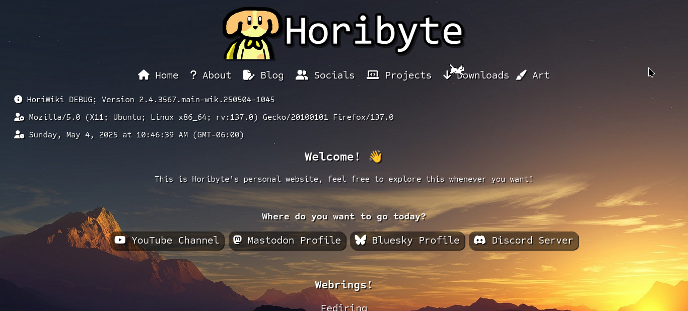
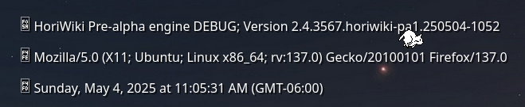
Pre-alpha stages gallery & info
Real development shortly took place after forking said website, and what you know as the HoriWiki Engine today was developed in 2 days
This “gallery” has screenshots of developer builds of HoriWiki, don’t expect quality images, as they’re taken from Discord messages sent by Horibyte or others.
These are all the builds compiled on May 4 2025:
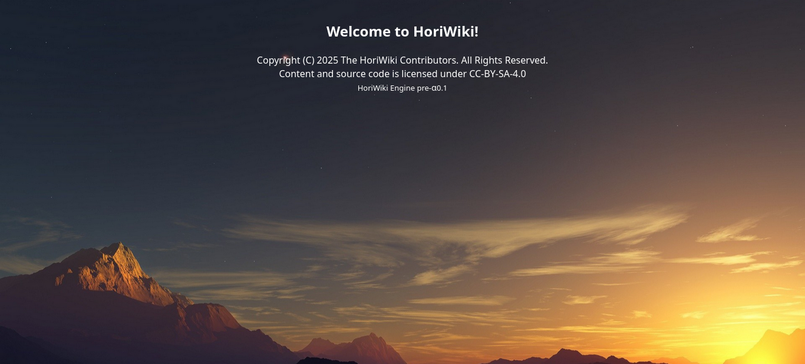
This build basically has wiped all of the HoriWebsite stuff in the front-end, there’s still some HoriWebsite code though.
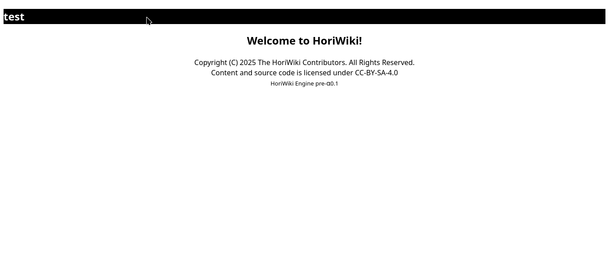
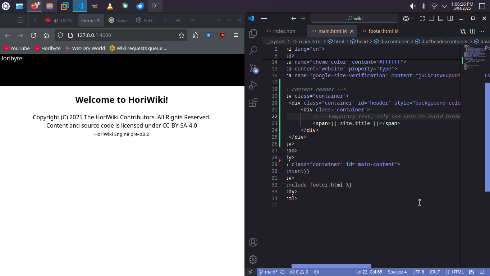
These are attempts to get MediaWiki-style nagivation bars.
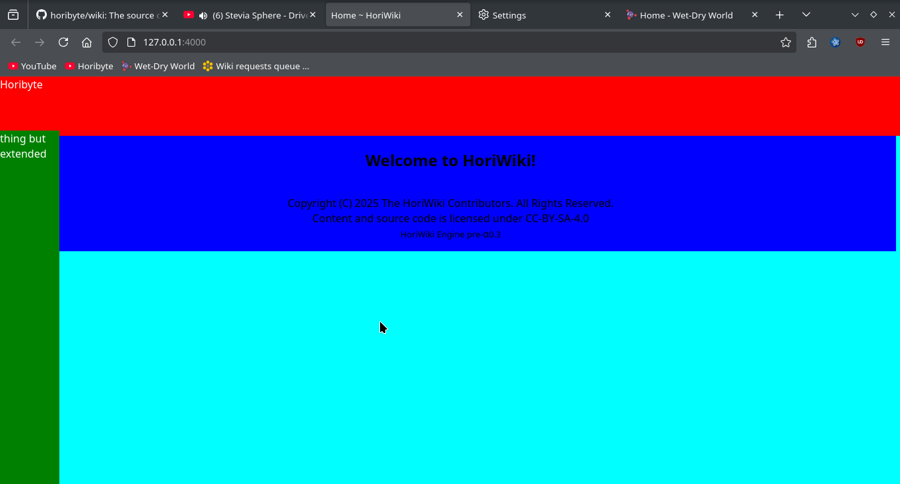
Navigation bars are kinda done, this build have multi-colored segments to make it easier for debugging.
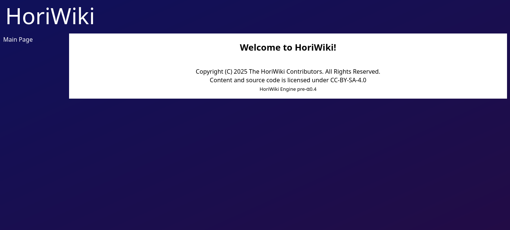
P-A 0.4 is where HoriWiki takes form, as some elements are almost finished.
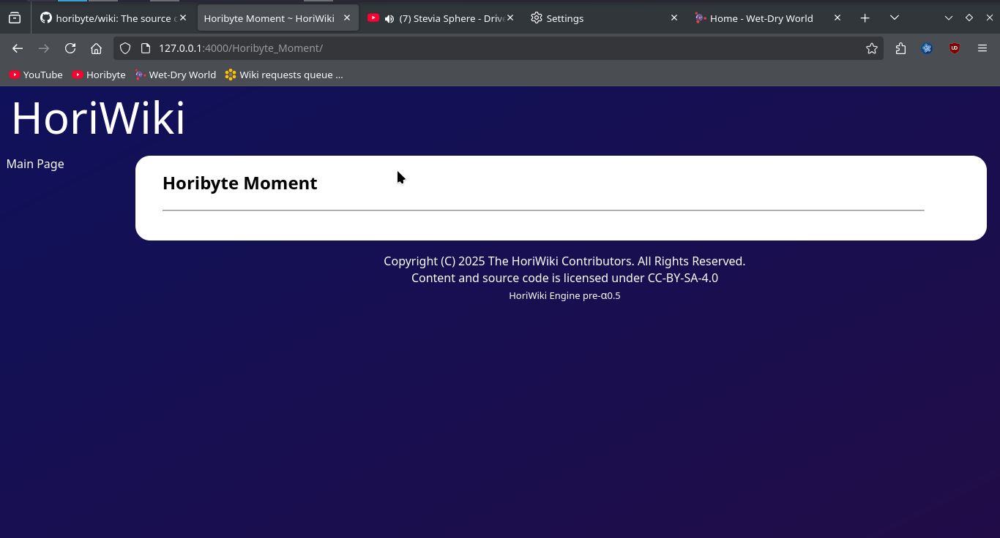
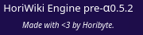
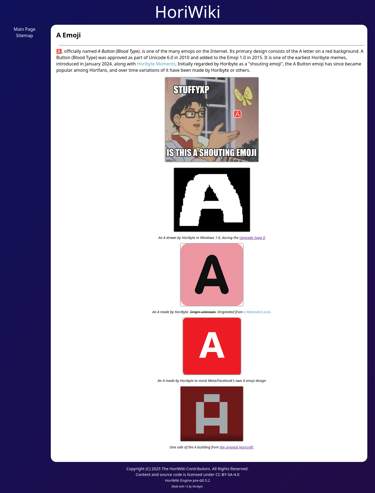
Builds 0.5.x are the most complete builds of that day, having almost everything right lol
Builds compiled on May 5 2025:
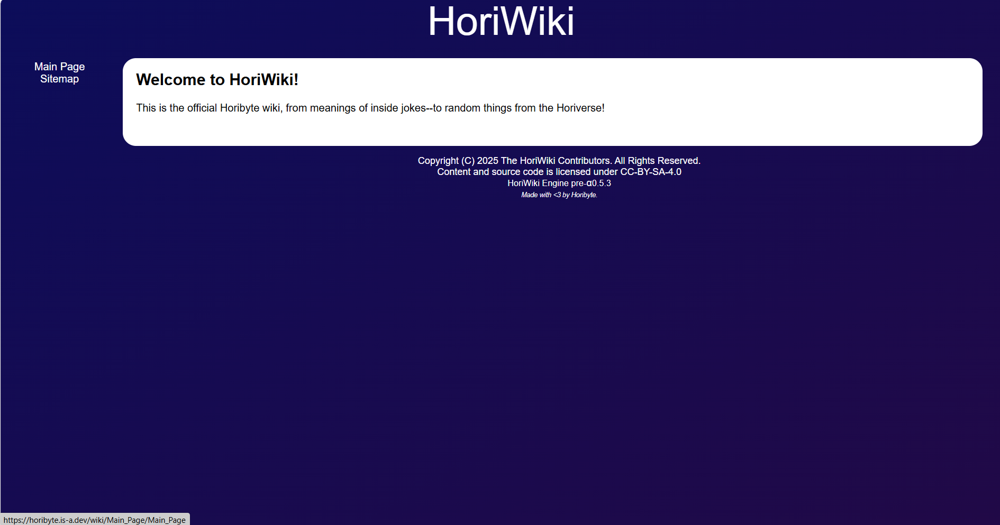
Build 0.5.3 was the most-feature complete pre-alpha build yet, most important things were already done.
Build compiled on May 6-7 2025

Alpha 1.1 is a major milestone in the engine’s development history as it made some really cool updates to the engine itself, including Markdown support!
Most fixes were made by Clyron.
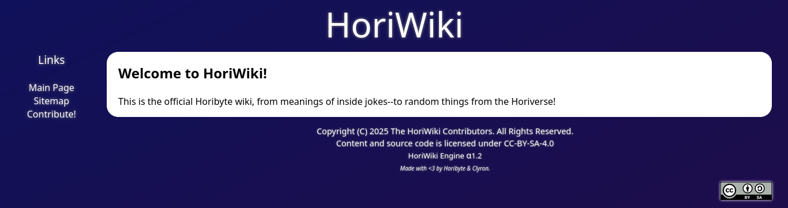
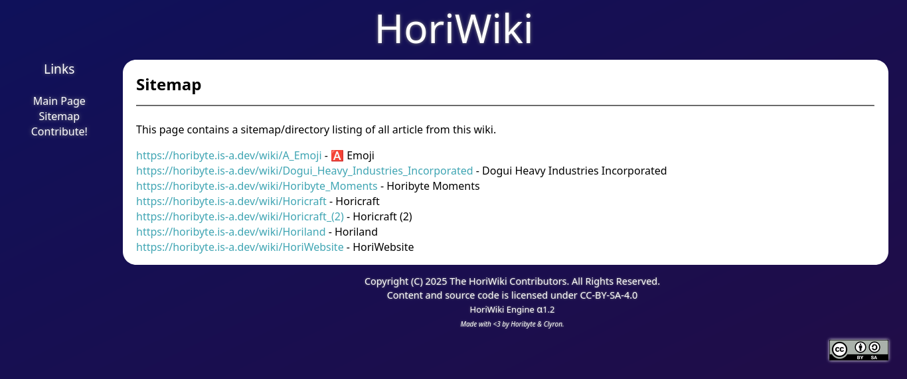
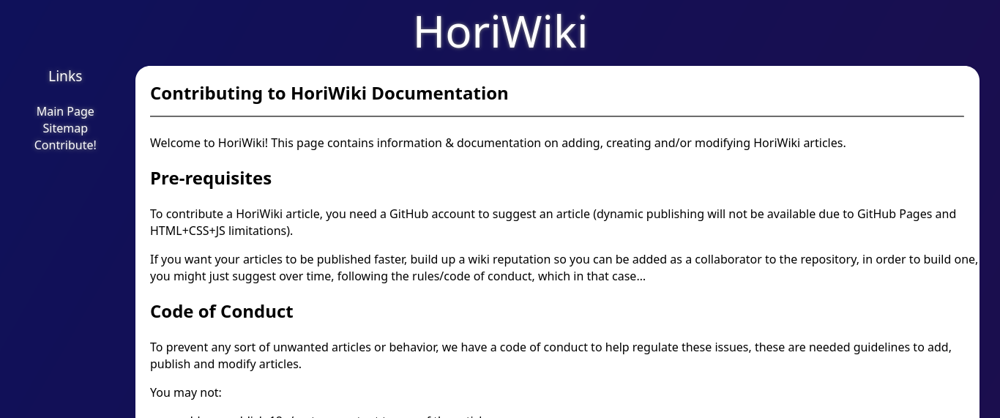
Welcome to the present! Alpha 1.2 is was the current version of this page as of May 7 2025.
Nothing really new to engine aside from some bugfixing, still a cool thing nevertheless
Beta 1.0 was released on May 7 2025 as well, including fixes for mobile!!
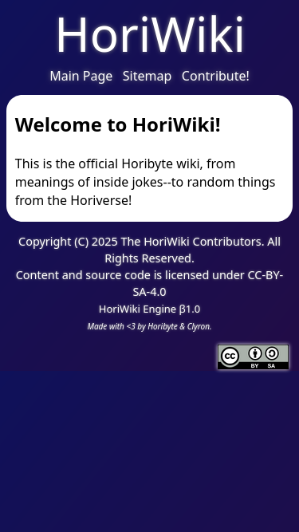
HoriWiki still continues its development period, as there are more things to add to make it a fully complete MediaWiki-like port to Jekyll.
The wiki is still in development :3
¹↑ Fully known as Horibyte Wiki.